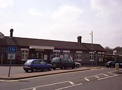
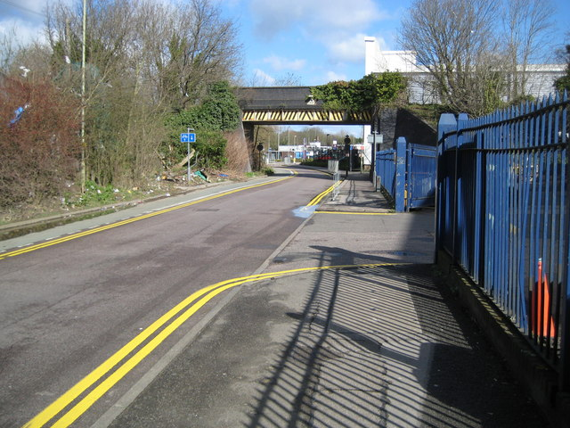
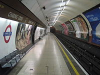
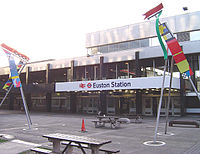
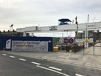
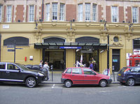

| Image |
Name |
Information |
| Current Picture |
Current Name |
Used Name |
Postcode/Position |
Time of Opened |
|  |
Amersham |
Amersham & Chesham Bois |
HP6 5AZ |
Amersham |
9September1892 |
 |
Baker Street |
|
HA3 8NT |
Marylebone Rd, Marylebone |
10 January 1863 |
|  |
Cassiobridge |
|
WD18 7QQ |
Cassiobridge Road |
2020 |
|  |
Charing Cross |
Strand |
WC2N 6DX |
Embankment Pl London
|
10 March1906 |
|  |
Euston |
|
NW1 2DU |
Euston Station
Kings Cross, London
|
22 June 1907 |
|  |
Nine Elms |
|
SW8 4SR |
52-, 58 Wandsworth Rd, London |
2020 |
|  |
Queensway |
Queen's Road |
W2 4RH |
Bayswater Rd, London |
16July1900 |
 |
Waterloo |
|
SE1 8SR
|
South Bank, London |
1March1906 |
 |
Wood Green |
|
N22 6EB |
Wood Green, London |
19 September 1932 |
 |
Wood Lane |
|
W12 7SL |
Ariel Way, Shepherd's Bush, London |
12 October 2008 |